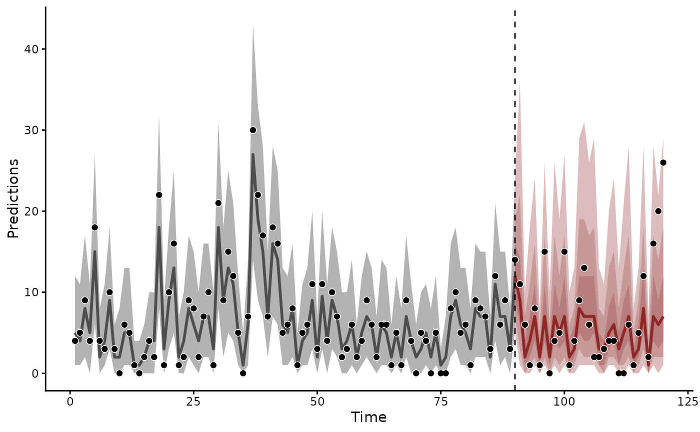
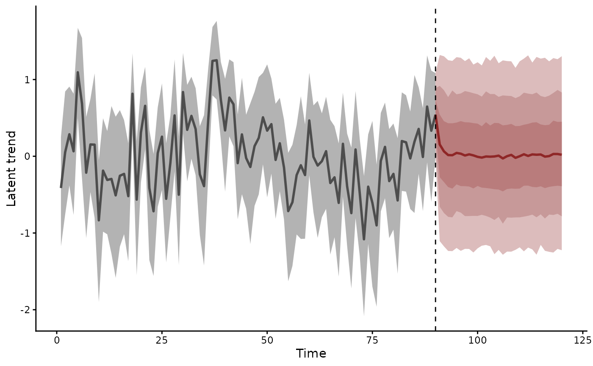
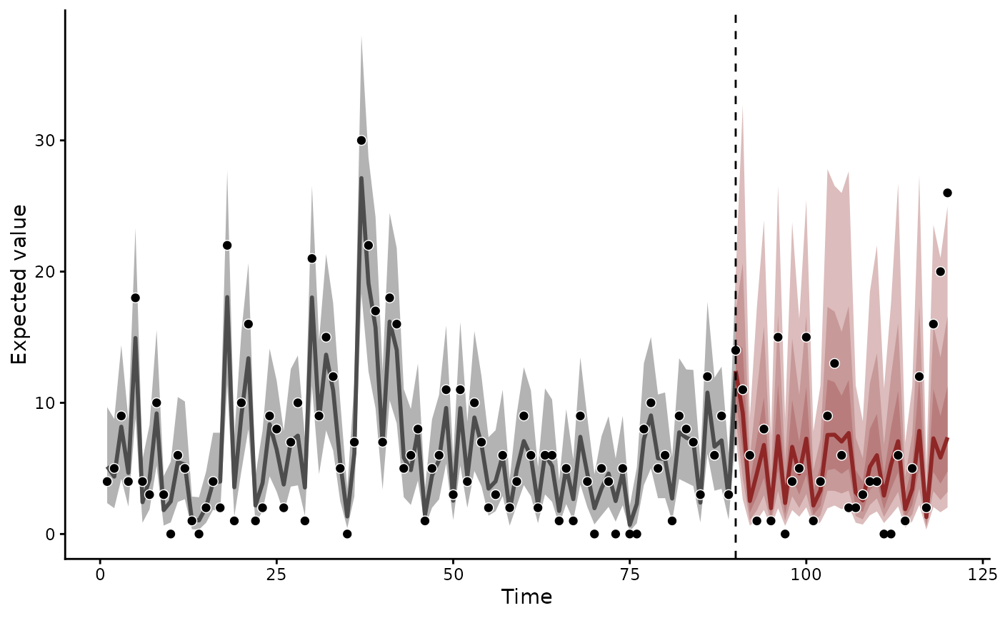
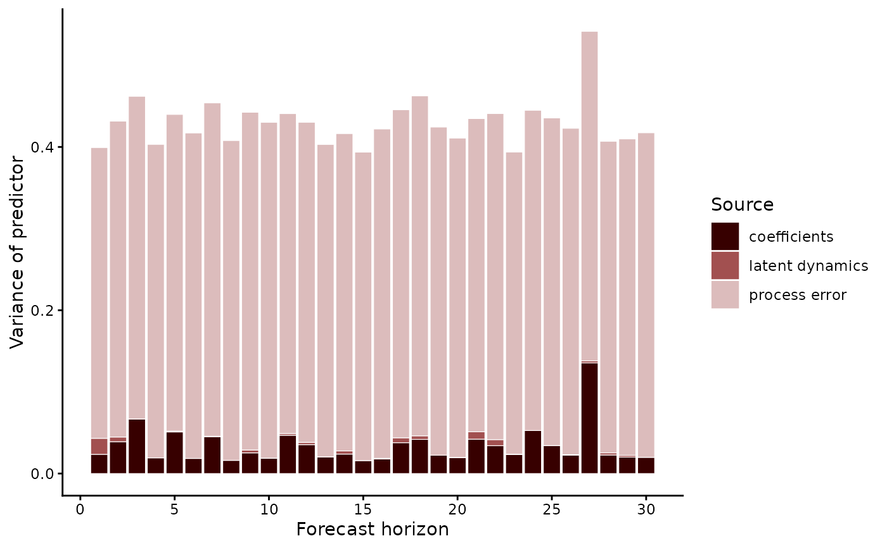
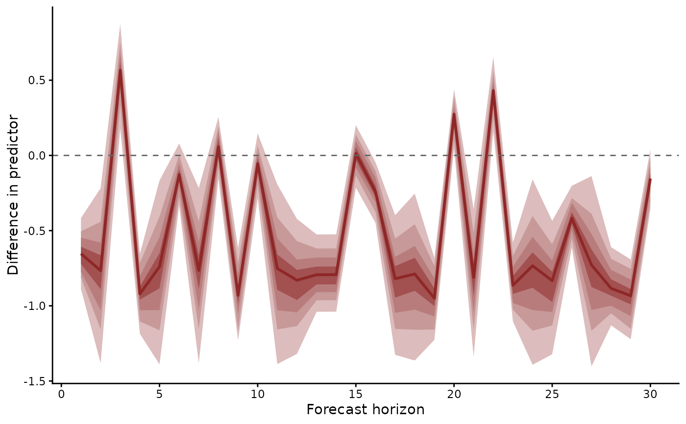

Shows where a forecast's uncertainty comes from and how each source grows with the horizon. The variance of the forecast at each horizon splits among the model's terms, its random effects, the latent dynamics, process error and, on the response scale, observation noise.
Usage
forecast_uncertainty(object, ...)
# S3 method for class 'mvgam'
forecast_uncertainty(
object,
newdata = NULL,
...,
scale = c("link", "expected", "response"),
n_replicates = 20L,
n_boot = 200L,
ndraws = NULL,
draw_ids = NULL,
re_formula = NULL,
allow_new_levels = FALSE,
sample_new_levels = "uncertainty",
resp = NULL
)
# S3 method for class 'mvgam_forecast_uncertainty'
summary(object, probs = c(0.025, 0.975), ...)
# S3 method for class 'mvgam_forecast_uncertainty'
print(x, digits = 2L, ...)
# S3 method for class 'mvgam_forecast_uncertainty'
plot(
x,
type = c("variance", "share"),
by = c("kind", "source"),
series = NULL,
...
)
# S3 method for class 'mvgam_forecast_scenarios'
summary(object, probs = c(0.025, 0.975), ...)
# S3 method for class 'mvgam_forecast_scenarios'
print(x, digits = 2L, ...)
# S3 method for class 'mvgam_forecast_scenarios'
plot(x, series = NULL, ...)Arguments
- object
A fitted
mvgamobject.- ...
Unused. Anything passed here is refused.
- newdata
Data frame of future times, as
forecast.mvgam()takes it.NULLuses the data held out at fit time. A named list of such frames compares scenarios, each frame holding one possible future of the covariates. See Scenarios.- scale
"link"(the default) splits the predictor, where its parts add and the split is exact."expected"splits the expected value. Its variance grows with the mean, which lets a covariate's swings move it between horizons."response"adds observation noise, giving the variance of new observations.- n_replicates
Number of times each draw is propagated, at least two. More replicates steady the process error.
- n_boot
Number of bootstrap resamples of the draws, which give each share its interval.
- ndraws, draw_ids
The posterior draws to use, as
hindcast.mvgam()takes them.NULLfor both uses every draw.- re_formula, allow_new_levels, sample_new_levels
How group-level terms enter, as
forecast.mvgam()takes them. A level the fit never saw adds the spread among levels torandom effects.- resp
The response to report, needed on a model with several.
- probs
Interval probabilities of the table. Defaults to
c(0.025, 0.975).- x
An
mvgam_forecast_uncertaintyobject fromforecast_uncertainty().- digits
Integer number of significant digits. Defaults to 2.
- type
"variance"(the default) stacks each source's absolute variance."share"stacks its fraction of the total.- by
"kind"(the default) stacks each kind of source."source"stacks each term.- series
The series to plot, by name or position.
NULLplots every series.
Value
An object of class mvgam_forecast_uncertainty. print()
gives each series' overview. summary() takes probs and returns
a list of three tibbles:
overviewone row per series: the forecast's SD at its first and last horizons, the
dominantkind of source at the last horizon, the share of resamples that agree (support) and the horizon at which the dominant kind firstchanges_athorizonsthe forecast's variance at each horizon
sourceseach source's
variance,contributionandshareat each horizon, the share with its interval
plot() stacks the sources over the horizon. A negative
contribution is drawn as zero. The object's draws element holds,
per series, the [draws, horizons] matrix of the forecast's mean
given each draw.
A list of frames in newdata gives an object of class
mvgam_forecast_scenarios. print() gives each difference at the
last horizon. summary() returns a list of contrasts, one row per
horizon, with overview, one row per scenario and series. plot()
draws each difference over the horizon. Its scenarios element holds
each scenario's own mvgam_forecast_uncertainty object.
Details
With \(\theta\) the parameters and \(y_h\) the forecast at horizon
\(h\), the law of total variance gives
$$\mathrm{Var}(y_h) = \mathrm{Var}(\mathrm{E}[y_h \mid \theta]) +
\mathrm{E}(\mathrm{Var}[y_h \mid \theta]).$$
Each draw is propagated n_replicates times with fresh innovations.
The variance across a draw's replicates, averaged over the draws, is
the process error. The variance of the replicates' means is the
parameter uncertainty, less its known excess of the process error over
n_replicates. This holds exactly on every scale. Monte Carlo error
can leave a small estimate negative. No estimate is clipped.
Sources. Parameter uncertainty splits by source, each of one kind:
coefficientseach population-level term, smooth or
gp(). This uncertainty falls with more data.random effectseach group-level term
latent dynamicsthe latent state's mean path, holding the uncertain last state and trend parameters
process errorwhat the trend's innovations add. It persists however much data arrives.
driverwhat an uncertain future covariate adds. A
mi()covariate missing fromnewdatafollows its own trend into the forecast. Its innovations areimputed covariates, split fromprocess errorby their covariance with the forecast.observationnoise around the expected value, under
scale = "response"alone
Terms of the trend formula are labelled (trend). A term that is zero
at every forecast row is left out.
Contributions. Parts of a model share a posterior: an intercept and
a covariate's effect can each be uncertain while their sum is not. A
source's own variance can then far exceed the forecast's. Its
contribution is its covariance with the whole forecast, which counts
what reaches the forecast. The contributions sum to the forecast's
variance. A source offsetting another takes a negative one. The
contribution is the source's Shapley value in the forecast's variance.
Terms that overlap, such as s(x) with t2(x, z), can take large
contributions of opposite sign. The sum over a kind stays stable, which
is why the overview and the default plot work by kind.
A diri(), multi() or categ() fit gives each species' share
through a softmax, which ignores a shift every species at a site
shares. Its link scale is centred across the species at each site,
the centred log-ratio scale.
On the link scale the contributions are exact. On the other scales a
term's values are the expected value less the expected value without
that term, as in variance_partition(), rescaled to sum to the
parameter uncertainty. The terms then interact, which makes their
split an approximation. The split between parameter uncertainty,
process error and observation stays exact. On a skewed scale a few
draws can drive a variance, which makes the link scale steadier.
Scenarios. A list of frames sharing their series and times gives each scenario its own split. It also gives the difference between each scenario and the first, draw by draw, with a posterior interval. Every scenario takes the same draws and the same innovations. On the link scale the state then cancels, leaving what the covariates change. Because a list of scenarios is no probability distribution, no variance is taken across it. To separate two covariates, vary one at a time.
The intervals resample the draws. They measure the Monte Carlo error
of a share, which falls with ndraws and n_replicates.
References
Dietze MC (2017). Prediction in ecology: a first-principles framework. Ecological Applications 27(7), 2048-2060.
See also
forecast.mvgam() for coef_uncertainty and
trend_uncertainty, fevd() for the sources of a VAR's forecast
errors, variance_partition() for the fitted predictor. The
forecast evaluation article
runs forecast_uncertainty() on rodent captures.
Other forecasting:
compare_scores(),
ensemble.mvgam_forecast(),
forecast.mvgam(),
hindcast(),
lfo_cv.mvgam(),
score()
Examples
# \dontrun{
set.seed(11)
simdat <- sim_mvgam(family = poisson(), n_series = 1L,
n_timepoints = 120L, trend_model = AR(),
proportional_train = 0.75)
mod <- mvgam(
y ~ s(x, k = 5),
trend_formula = ~ AR(p = 1),
data = simdat$data_train,
newdata = simdat$data_test,
family = poisson(),
chains = 2, silent = 2
)
#> Warning: 25 of 2000 (1.0%) transitions ended with a divergence.
#> See https://mc-stan.org/misc/warnings for details.
# The held-out data given to mvgam() set the forecast horizon
fc <- forecast(mod)
plot(fc)

# The latent AR(1) trend alone, on the log scale
plot(forecast(mod, type = "trend"))

# The expected counts, without the Poisson sampling noise
plot(forecast(mod, type = "expected"))

# Next, score the forecast against the held-out counts
head(score(fc, score = "crps")[[1]])
#> score in_interval interval_width eval_horizon score_type
#> 1 1.742354 1 0.9 1 crps
#> 2 2.140199 1 0.9 2 crps
#> 3 2.320223 1 0.9 3 crps
#> 4 1.344777 1 0.9 4 crps
#> 5 0.591562 1 0.9 5 crps
#> 6 4.738040 1 0.9 6 crps
# The sources of the forecast's variance at each horizon
plot(forecast_uncertainty(mod, ndraws = 200))

# How a future with higher `x` would change the forecast
higher <- simdat$data_test
higher$x <- higher$x + 1
plot(forecast_uncertainty(
mod, newdata = list(observed = simdat$data_test, higher = higher),
ndraws = 200
))

# }